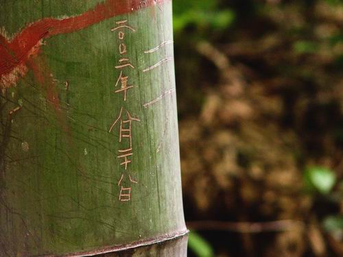

Archives : 2004-07
I am in singapore airport @ Jul 26, 2004
Just arrived at Singapore airport,after 3 hours we will transfer to Phuket,Thailand.Here say hello to everyone!
荷花盛开的季节 @ Jul 23, 2004
今日是大暑，大暑是荷花盛开的季节，诗人赞美曰：映日荷花别样红！

南京今天最高气温达到38度，整个城市都在节约用电，公司中央空调上午倒是很凉爽，下午却显得动力不足，坐在座位上浑身微微地出汗，尤其是脚和鞋子接触的部分汗更多，索性早晨换了最简单的凉拖穿来上班。
再过两天就要出发去普吉岛度假，什么都没收拾，包括最主要的泳衣，之前在金鹰购物中心看过，没遇见合适的款，不晓得哪里还能寻到更多选择？DV和DC打算都带上，2002年去泰国的时候对拍照没什么概念，带着个小傻瓜光学相机就去了，没拍出什么好照片，这次要好好补偿一下。
姿儿来的周末 @ Jul 21, 2004
 姿儿从上海来南京的上个周末过得那么热闹而拥挤，时间总是不够用，黑眼圈...黑眼圈，杀人游戏...杀人游戏，泡吧...泡吧......三个女人坐在一辆车里，一起去洗脚，还能体会到那种感觉：幸福。
姿儿从上海来南京的上个周末过得那么热闹而拥挤，时间总是不够用，黑眼圈...黑眼圈，杀人游戏...杀人游戏，泡吧...泡吧......三个女人坐在一辆车里，一起去洗脚，还能体会到那种感觉：幸福。
而，姿儿来的周末是我和BESS吵架一个月以来第一次见面......白天消杀公司的人给她家杀跳蚤，晚上她住到我这里，穿着DAVID的短裤汗衫和我睡在一起。那些跳蚤是宠物狗小新从外面带回来的，听说小新去了青岛之后身上的跳蚤就没了。
死了都要爱 @ Jul 18, 2004
送给那些眸子里、笑里、心里藏着爱的男人和女人们，送给你们，相信真爱的力量~~
死了都要爱
不淋漓尽致不痛快
感情多深只有这样
才足够表白
死了都要爱
不哭到微笑不痛快
宇宙毁灭心还在
把每天当成是末日来相爱
一分一秒都美到泪水掉下来
不理会别人是看好或看坏
只要你勇敢跟我来
爱不用刻意安排
凭感觉去亲吻相拥就会很愉快
享受现在别一开怀就怕受伤害
许多奇迹我们相信才会存在
死了都要爱
不淋漓尽致不痛快
感情多深只有这样才足够表白
死了都要爱
不哭到微笑不痛快
宇宙毁灭心还在
穷途末路都要爱
不极度浪漫不痛快
发会雪白土会掩埋
思念不腐坏
到绝路都要爱
不天荒地老不痛快
不怕热爱变火海
爱到沸腾才精采
乱七八糟的鸭头 @ Jul 17, 2004
感冒了...左下眼睑还长了麦粒肿之类的什么东东...反正是炎症的状态，隐型眼镜不能用了，只好戴上有架眼镜，晚上姿儿从上海来看我们，很开心，只可怜这副状态去见她......
 前两天晚上想写点什么的，服务器有问题网站打不开，耽搁了那些突如其来的灵感，丢掉了也就丢掉了，不过是有关吃喝、有关乱七八糟的鸭头的灵感。第一次发现自己居然是个勇猛的女子，能吃下有毛的鸭头，吃鸭头上的眼睛，还把眼睛抠下来吓唬对面坐着的人，原来吃鸭头除了解谗之外，还有这么许多的乐趣存在？呵呵~~南京人喜欢吃鸭子，很多女孩子喜欢吃鸭头，其实我接受吃这玩意儿，也不过是两三年的事。尤其喜欢吃悠仙美地的鸭头，叫服务生稍微用微波炉热个几秒钟，热的时间太长容易咸，那里的鸭头可以算是美味卫生的了。
前两天晚上想写点什么的，服务器有问题网站打不开，耽搁了那些突如其来的灵感，丢掉了也就丢掉了，不过是有关吃喝、有关乱七八糟的鸭头的灵感。第一次发现自己居然是个勇猛的女子，能吃下有毛的鸭头，吃鸭头上的眼睛，还把眼睛抠下来吓唬对面坐着的人，原来吃鸭头除了解谗之外，还有这么许多的乐趣存在？呵呵~~南京人喜欢吃鸭子，很多女孩子喜欢吃鸭头，其实我接受吃这玩意儿，也不过是两三年的事。尤其喜欢吃悠仙美地的鸭头，叫服务生稍微用微波炉热个几秒钟，热的时间太长容易咸，那里的鸭头可以算是美味卫生的了。
过去不吃动物内脏不吃带毛的肉皮鸡皮鸭皮...长得不好看的肉块或者骨头不吃...等等这些“挑剔”都已经克服了自我恐惧的心理，渐渐接受下来，总之吃的时候不能过于发挥自己的想象力，最大的恐惧来自自己的想象.......其实有些食物吃起来有享受美味之感。看着有的人如此纤细想起自己过去也是这个样子，不禁感慨，究竟是长大了还是自己神经粗糙的缘故呢？
仅此而已 @ Jul 13, 2004
—来自六翼的Liang
六翼：男, 网名：青果法师，曾用名：欲浮，大学期间人送绰号”大法师”. Physically出没于Texas（美国得克萨斯州）的Dallas（达拉斯）的各个餐馆，也常年蛰伏在北美网络，胸无大志，至今除仓促出版过UNIX/Linux几本书籍赚取稿费若干外尚无其它建树。
 我停留在这个城市里已经很久了，在来到这个城市的时候，我没有想到我能够在这里这么久，因为我以为我会一直走。
我停留在这个城市里已经很久了，在来到这个城市的时候，我没有想到我能够在这里这么久，因为我以为我会一直走。
夜晚来临的时候，我推开窗户。整个城市的灯光显露在眼前，明明暗暗，每一盏灯光下都有一个我不了解的故事，就像我在这片黑暗之中静静的注视着整个城市一样，不曾有人知道，不曾有人注意。
城市的灯光开始逐渐熄灭，就象擦出的火花，在夜深的时候，一闪即逝，留下的是空洞洞的黑夜和逐渐沉睡的城市。
我是在送别Awei后很久才突然想起来我已经很久没有回去过了。我计算着时间，时间像小巧的数字，没有重量，没有长度，甚至没有绝对的意义。大约四年前，我在准备一张前往美国的签证，那个时候我一点也不在乎，甚至签证官要对我背景进行审查的决定都没有影响到我的心情。可是当这样的一张纸飞进护照里的时候，我和父母亲友就有了一张纸的距离。
上次回国的时候，同学说我变得沉默了。我说大概不是我变了，是环境变了，距离改变了许多。于是我开始记录，记录总是无续，甚至琐碎，但是我还是在记录，因为记录是为了下一秒的遗忘。
我喜欢旅行，确切的说是喜欢没有目的的一个人的旅行，喜欢乘做长途客车，火车的旅行。喜欢旅行的过程甚至强过了喜欢旅行本身，虽然这个过程未必会持续太久。
天气开始变得炎热，我开始昼伏夜出。我开始发现我被网络困扰着，我开始尽量不上网，我开始拒绝使用计算机。我知道这是不现实的幻想。在一个寂静的夜里，经过严肃的思考后我决定白天我将不再使用网络，这可以避免网络像一张网似的覆盖在我
的神经上。
夜晚的风开始吹起，它们清新又寂寞，它们将露水撒在每一片草叶上。母亲在电话里说表姐最近去看望她，表姐本来打算看完母亲后要结束自己的生命的。听母亲这么说，我就知道表姐一定安然无恙了，因为母亲是这个家族里最坚强的女性，虽然我在电话里
也能听到过她的脆弱。
抬头望天，透过悬浮的尘埃，我看见了苍穹的尽头。那里的星星亘古不变在遥远的地方散发着微弱的光芒，在我每一次抬头仰望它们的时候，虚无，安静地俯视这大地。看到这些永恒的东西我就会变的平静，因为这浩瀚星云的美丽。
能够支配的时间越来越少，不禁想起那个茨威格笔下的B博士。这个世界上拥有无尽时间和空间的B博士只能在纳粹集中营里思考象棋。我似乎不能理解B博士这样的人存在，因为我的时间和空间总被一些事情填充，大或小，琐碎或重要。然而我也明白，我没有像B博士一样精神苦闷与灵魂扭曲是因为我没有更多的时间去思考。
不是么，人类一思考，上帝就发笑，仅此而已。
也曾如此微笑... @ Jul 13, 2004
年轻的美会让人记忆更深，成熟的美能让人记忆更久......
-1995年摄于南京清凉山公园，那年21岁，喜欢笑，可是笑容里什么也没有，象一汪清澈的水。想起席慕容的文字“如何让我遇见你，在我最美丽的时候...”

此前...之后... @ Jul 12, 2004
回到家大口大口的吃昨晚的蛋挞，有陶醉的口感和味觉。
此前，有下雨天的忧郁......每天过得如此之快，如缝隙里飞驰而过的快乐，想抓也抓不住。我象一条鱼游荡在这潮湿的城市里，早晨没有阳光照射在窗帘上的欢喜，倒是傍晚能令我安静下来，然后月亮时隐时现的出现，即使上一周严重缺觉也希望能这样坐一夜......
生活一天一天复制下去，象复印的图画，我走过那些熟悉的街道，那些临街的窗户紧紧关闭着，上面落满灰尘，似乎从未打开过，不愿意改变什么，因为所有的改变都意味着是对过去的一种放弃。有时，幻想也是很快乐的事儿，因为现实更为残酷。叔本华说：“我们经常遇到痛苦，却常比我们所想象的痛苦还多。”这句话也可以反过来理解：我们经常遇到快乐，却常比我们所想象的快乐还少。“人们创造出的苦难比自然原来赋予他们的还要多。”这还是叔本华说的。时间每一天都这样流逝，许多时候都茫然失措。即使这样，那些躁动的日子也还是一去不复返。我不能没有自主的精神生活，这对活着非常重要。同时，还希望能获得一种微笑的力量！
竹 @ Jul 12, 2004



有兴趣的话请做这份答卷 @ Jul 10, 2004
敬启者：
以下问题纯粹是为了完成我在英国ESSEX大学的毕业论文，不做任何商业用途。所涉及到的个人及家庭隐私会视为高度机密处理。很感谢各位的帮助！
毕业论文题目：中国消费者在电脑国产品牌和国际品牌之间的偏好选择。本篇论文侧重点是研究品牌的偏好。借助电脑这个行业来调研，因为我个人认为现今在中国市场国产电脑品牌的接受程度不亚于一些国际知名品牌。
问题：
1．您的年龄，性别，职业，教育程度，年收入水平，婚姻状况，居住地（哪个城市）？
2．现在您家里拥有的是何种品牌的电脑？（例如是联想，还是IBM，请注明是台式机或手提。）
3．在您的家里，由谁来决定买何种品牌的电脑，是您，还是你的妻子或丈夫或孩子或大家共同决定或其他人决定？
4．什么因素会影响您的购买决定？您认为品牌会影响您的购买决定吗？为什么？
5．您如何获得电脑品牌信息，是通过广告，还是朋友、亲戚介绍或其他渠道？您会定期收集相关信息吗？
6．您认为品牌名称对电脑产品有多重要？请具体说明。如能举例更好。
7．你是偏爱国产品牌还是国际品牌？为什么？您实际购买的是何种品牌的电脑？如偏好和实际选择不一样，请说明原因。如果没有特别的偏好，也请说明原因。
8．请说明以下品牌名称给您的第一印象：
国产品牌：
联想：
清华同方：
方正：
金长城：
海尔：
海信：
实达：
浪潮：
或能给您深刻印象的其他国产品牌，请补充：
国际品牌：
IBM：
COMPAQ康柏：
DELL戴尔：
SONY：
APPLE苹果：
韩国三星：
TOSHIBA东芝：
或能给您深刻印象的其他国际品牌，请补充：
9．您觉得您的品牌选择说明了什么？是这个品牌有什么特别的特征或功能吗？
10．在何种条件下，您会转变您的品牌偏好？例如从国际品牌转向到国产品牌。
没考虑过。
11．关于电脑国产品牌和国际品牌之间的选择，您还有什么观点要附加的？
感谢您的耐心和帮助，回答以上问题。
请回答完后发E-MAIL至：niexiangjiang@hotmail.com或xjnie@essex.ac.uk
《十分钟年华老去》 @ Jul 10, 2004
最近在看这部《十分钟年华老去》的DVD，15位世界名导的10分钟-10分钟，年华怎样老去？还没看完之前同事将这位先生写的观后感的连接给我，这里介绍给大家，有兴趣的话可以看看。
以“时间”为题，每位导演只有10分钟的长度展现主题，组成了一套名为《十分钟年华老去》的短片集锦。
近期即将推出《十分钟年华老去》双D9，还加入了大量拍摄花絮以及背景资料。
时间，也许是电影的一个永恒命题，就像无论光影如何书写，总也避不开每秒24格的胶片真理。《十分钟年华老去》分为“小号”与“大提琴”两篇。“小号”篇共有7部作品,“大提琴”篇则收录8部作品。创作的阵容几乎是对现存大师级人物以及各美学流派活跃分子的一次检阅。
虽然每部作品只有短短的10分钟，导演们大多完好地展现出个人风格，并由此表达对“时间”的不同理解。考利斯马基的《狗没有天堂》显露出一贯的冷漠僵直；赫尔佐格描写土著部落生活变迁的纪录片《万年之后》是他招牌式的苍茫与冥想；斯派克-李保持着一如既往的激进与批判，对美国选举制度大肆抨击；陈凯歌的《百花深处》则通过新旧时代的碰撞表达对传统、现代交替间的质疑，“百花深处”道尽文化失调症；维多-艾里斯闭关十年后，意外带来西班牙乡间的一日即景，许多人把此段喻为去年最美丽的电影；最犀利的要数戈达尔的《时间暗处》，在10分钟之内对生存、死亡、思想、爱情等话题一一进行图解。
贝尔特鲁奇在十分钟里讲的是一个类似中国的“黄粱美梦”的故事，阿拉伯青年的所有经历也许只是一场幻梦。在羊水破了的一幕，整个场景的地面都如水波浮动，强烈的梦境感也随之而生。抛开这当中可能蕴含的第三世界贫民试图跻身发达国家的政治隐喻，贝尔特鲁奇展示的是一种虚无主义思想。他在给东京电影节的信中说他要表达的是“无”，因为就时间来说，“过去”不是实际存在的，“现在”是不可以延续的，“未来”则是尚未出现的，它们都是虚无的。
值得一提的是，婚礼的场景充满中东风情，色彩虽是黑白，但陈设豪华得如同阿拉伯帝国后宫，充分显示出贝尔特鲁奇的两个特点：对异国情调的热爱，和对奢华宫廷生活的重彩描摹。
吉里-闵采尔的《一瞬》是我看到的残缺的《十分钟：年华老去》里最具抒情色彩的一部。在这部浓缩情感的MTV般的短片中，有多个动人的片断。譬如在某个午后，胖老头像个孩子一样躺在一位女人的怀抱里，脸埋在她的胸膛间，安静得如同安静本身。这是某出戏的场景，还是他本人的经历？真的？假的？也许这并不重要，因为这一切都属于他的生活。
闵采尔说“人生苦短”。在影片的结尾，伴着钢琴琴键重重的敲击，演员的脸孔从青年到老年一下下地变化，原来这就是人的一生。有种庄生梦蝶的惘然之感，“锦瑟无端五十弦，一弦一柱思华年”。
伊什特万-萨博的短片极为简单，没有太多形而上的哲思，仅仅讲述一个家庭、一种平静生活在10分钟内的猝然而轻易的崩溃。十分钟后，巨变已经发生，与此前女主人哼着乐曲，欣悦的心情如同隔世。萨博要揭示的，或者就是这份命运的无常弄人，在不见一丝风浪的水面之下，却隐藏着破坏的不安，而当它突如其来，我们的承受力原来竟这般脆弱。
克莱尔-丹尼丝，作为十五人中唯一的女导演，带来的作品并不具有任何女性创作者的特点，但可以肯定它是“法国制造”。短片中，让-吕克-南希滔滔不绝地述说。他是一位“海德格尔的阐释者”，是当代法国哲学界比较重要的人物，据说他因病移植了别人的心脏，因此对探讨“我”的概念大有启发。
这十分钟与其说是属于电影，不如说属于哲学。不知道克莱尔-丹尼丝为何选择了这个主题，可能，她要展示的是一颗头脑，在十分钟内所能进行的高速度高浓度思考。
迈克尔-雷德福的《追星》这部短片的立意实在是相当平常。它首先让人想起“山中方七日，世上已千年”的神话，其次是苏联科学家梅希可夫斯基在六十年代就讲述的“时间相对性”的理论，他指出一个25岁的宇航员以光速飞行三年后回来，女儿变成了老太太。迈克尔-雷德福的故事除了这些，还要说些什么，实在捉摸不透，至少看不出《1984》的思想深度。值得一提的是，片中的未来世界也弥漫着冰冷的金属色泽。
沃纳-赫尔措格的《几千年前》短片中，乌哈乌呼族正逐渐被时间再次抛弃，新的一代甚至以自己的存在为耻。日月的变动对他们来说是实际的，而手中的闹钟滴答滴答，却只是抽象而游离的存在，象征着自身一点一点的流逝，而无以挽回。
在让-戈达尔的《历史的最后瞬间》，银幕上是阴暗而模糊的影像，几个人似乎在扶起一个古怪的偶人，慢动作伴随着极具震撼力的轰然音乐，突然散发出一种无法言传的魔咒般的力量，那是敬畏、惊恐、庄严、忧伤等复杂情感的神奇混合，让人觉得血液上涌。这部结尾短片赋予了整部影片一种神圣感，在“时间”这样一个笼罩一切的阴影之下，生命是何其渺小。高乔/文
15种生命 15段短片
贝尔特鲁奇-《水的寓言》
途中，一位老者请年轻人去找点水喝，年轻人在找水的路上爱上一个女郎，他们结婚生子。当他再次在树林里看见那位老者，老者问他：“你去找水怎么这么长时间？我等了快一天了。”
吉里-闵采尔-《一瞬》
一位胖老头在黑白片时代纵横影坛。整部短片都是他在果树和阳光的陪伴下，泛起的关于一生的回忆。银幕上的形象与现实中的生活交相变换：胖老头张开双臂，去拥抱一个采果子的老太婆，被不耐烦地推开了，而年轻的他将一位衣着华美的美丽女子搂在怀中，深情长吻。
伊什特万-萨博-《十分钟之后》
一个平凡的中产阶级家庭。丈夫喝得烂醉回家，摔烂了杯盘，打翻了食物，最后开始粗暴地殴打妻子，妻子无论怎样也不能让他安静下来。在哭泣声中，她失控地拿起餐刀，刺进了丈夫的腹部。
克莱尔-丹尼丝-《走近南希》
法国哲学家让-吕克-南希与一名非法国裔姑娘的对话，间或插入了几个沉默的有色人种人物的剪影。没有故事性的情节，没有什么布景。
施隆多夫-《教化》
导演要从不同年龄的人身上找寻时间对于不同人的意义，在他眼中的时间是私人化的，并不存在统一的进程，老人、少年、姑娘各自所处的“现在”其实不同。
迈克-菲吉斯-《第二次》
第一个部分是男子在写自传，第二部分是少年在玩二战时的玩具，第三部分一女子弹奏钢琴，一男子唱着老歌，第四部分是一位老者在看电视，屏幕上则是一位老太婆。
这是15部短片中，最前卫的，让人看得云山雾罩。
迈克尔-雷德福-《追星》
宇航员托马斯驾驶飞船从银河系以外飞行了80亿光年的距离后返回了地球，此时地球的纪年是2146年并发生了巨大的变化，他的儿子已是龙钟的老人。在震惊和伤感之下，托马斯决定离开地球，飞回星际。
阿基-考里斯马基-《狗没有地狱》
导演一贯的风格：冷冷的幽默交织着热情澎湃。他躺在铁轨上，宣称是因为“火车误点了”，后来他“为了爱情”带着女人远赴西伯利亚。
维多-艾里斯-《生命线》
西班牙乡间的一日即景。画在手上的表、呼吸、除草、打铁，所有的声响都是生命流动的足迹。声光柔美静谧的“生命线”叙说着生与死的家国记忆 。
沃纳-赫尔措格-《几千年前》
记录了巴西亚马孙河流域最后的原住民部落“乌哈乌呼”。前半段是英法探险队第一次与他们接触，后半段是20年后再探部落的残留。这时的乌哈乌呼族已接触到现代文明，但他们也一并感染上水痘与感冒，许多人因此致命。
吉姆-贾姆许-《国际组织-拖车-夜晚》
一位辛苦的女演员，她在休息的十分钟里不断地被打扰，她整理头发、检查收音线……除了接电话之外什么事也做不了。她的十分钟休息时间，并没有任何休息可言。
维姆-文德斯-《距离托那12英里》
他是沙漠公路的常客，嗜好摇滚音乐，误食了含有药物的饼干，独自开车沿着路标求诊，却像走进迷宫找不到医院，他在跟时间赛跑。
斯派克-李-《我们将被掠夺》
这是访谈戈尔幕僚的纪录片，记录了戈尔与布什的选战开票日。从电视播报戈尔落后数十万票，到戈尔的幕僚阻止他上台宣布败选的十分钟。
陈凯歌-《百花深处》
游子返乡，生长的地方已被夷为平地。他请搬家公司帮忙，搬家工人装模作样地搬着只存在于他视野里的家具。
让-戈达尔-《黑暗时光》
爱、恐怖、历史、思考、电影、死亡等十个最后瞬间。这些片段有引自戈达尔的旧作，也有的来自帕索里尼等人的作品，还有的是历史记录，都令人痛苦。
FUNNY! @ Jul 09, 2004
我的宝贝 @ Jul 09, 2004

妞妞趴在客厅一直看着我洗澡，等着我陪着我亦或是无所事事的表现？禁不住拉开浴室的玻璃门跑去拿了相机来拍摄，我觉得她就象我的孩子一样。
不如，你送我一场春雨 @ Jul 09, 2004
下雨的时候，吹来的风中夹着某种味道，在这种味道里我洗澡、换衣，然后站在窗前贪婪的呼吸，直到睡眠的前一刻期待有人将我从这里带走。
 认识的几个女子离婚了或正在办理离婚......别太依赖男人，让女人痛苦的就是男人。女人始终都该精致地生活，无论身处何种境地。我是一个知行矛盾的人。每一个人都是如此，只不过这种对抗性在我身上更明显。人与人之间包括男人和女人的交流只是停留在浅层次上，双方除了服从便是争吵。一位德国人说过，男人和女人是两种不同的动物，男人是狗属犬科动物，女人是猫属猫科动物，怎么指望一只狗为一只猫或是一只猫为一只狗做些什么，双方只要相安无事就好。
认识的几个女子离婚了或正在办理离婚......别太依赖男人，让女人痛苦的就是男人。女人始终都该精致地生活，无论身处何种境地。我是一个知行矛盾的人。每一个人都是如此，只不过这种对抗性在我身上更明显。人与人之间包括男人和女人的交流只是停留在浅层次上，双方除了服从便是争吵。一位德国人说过，男人和女人是两种不同的动物，男人是狗属犬科动物，女人是猫属猫科动物，怎么指望一只狗为一只猫或是一只猫为一只狗做些什么，双方只要相安无事就好。
女人应该学会忘记，尽力避免犯同样的错误。很多人活着，但又看不清自己，婚姻使女性完全丧失自我，成为一种虚假的自我，女人应当被爱被欣赏，男人应当去爱去欣赏，这仍旧是男人制造出的规则，没有人在乎女人的思想和意愿，包括女性自身。一个完美主义的女性，同时也会被称之为有问题的人，在人们看来一个好女人就是低眉顺眼、逆来顺受，这才叫温柔，这才叫通情达理。爱情和婚姻都会死亡，我对任何事物的看法都是悲剧性的，但是我不能拒绝，无论如何我喜欢盛开的花朵。在生活和未来面前我也有恐惧感，这种感觉有时候还非常强烈，只要想到在这个世界上人人都是孤独的，这种恐惧就能够得到抑制......懒得去想这些，太累了。
人自然地来到这个世界上，也应当自然地死去，但，我和你一样只想活到60岁。
我越来越不相信理性的力量，当人们越来越无耻地玩弄可以玩弄的东西时，我尤其厌恶理性。我只服从生活传达给我的感觉，当生活无法进行下去的时候，我便完全地逃向自我的世界。经历对每一个人来说都是必须的，有时躲也躲不过去，它的发生就是那么自然和出乎意料......惟一能够做的就是面对这一切。
变化...... @ Jul 08, 2004
越过隔板上的日历牌看见那个家伙在孜孜不倦地打弱智游戏，什么小地雷小水泡，我曾为之疯狂过的电脑游戏也就那么几个：《THE SIMS》、《SIMCITY 3000》、《红警》等等。总想写点什么？但思想的匮乏和近期《收获》给我的感受差不多，每期都随手翻翻，然后放在一边去做其他事情了。这是我的变化还是《收获》的变化？
不想入眠 @ Jul 05, 2004
把妞妞接回来了，分别了两周，让人心疼得瘦了许多。不知道能做些什么她喜欢吃，最近她一直挑食。
不上班的感觉真好，和家里人一起聚餐的感觉真好，吃饭的时候看着哥哥姐姐们笑啊讲的，心里特别幸福。往年觉得南京的天气好热啊，现在倒也可以忍受了，尤其昨晚特别凉爽，喜欢得让人不想入眠。。。。。。

真希望奔跑的是我和妞妞~~我也只能带她去东郊遛遛了。
比基尼态度 @ Jul 05, 2004
穿着花短裤白色大汗衫去遛狗，走了长长的路，路过报亭看见一本书上写着《比基尼态度》，引起对比基尼兴趣的原因是这个月底将去泰国的普吉岛度假，想穿比基尼的愿望非常强烈，但我一个人势单力薄，需要找到合伙参与的同性才好。女孩子们一起讨论是否穿比基尼的问题时，有个共同的声音说：“我们还是要回来的嘛~~”想穿什么还需要考虑那么多的问题？真累。为了那篇《比基尼态度》，我花了20元买下那本杂志，转载若干态度如下，与女同胞们共勉：
~~-在越来越多的国人出去见识过天体浴场的今时今日，比基尼成了老掉的牙，没资格再挂在嘴里的事。~~
在中国，每11个女人中只有一人拥有比基尼，而这11分之1的比基尼光天话日的几率也仅有敢不敢穿比基尼？比基尼穿给谁看？
莫须有的“比基尼身材”
什么是“比基尼身材”？是不是只有“比基尼身材”的人才可以穿比基尼？谁在定义“比基尼身材”？
自从“比基尼身材”这个词语问世以来，我们就惶惶不可终日-36C够不够大？一尺8寸超过一点点算不算细？还有臀部，球型的还是方型的？西方标准还是东方审美，身材要不要也国标？
我们被错误的引导了。
没有任何标准可以定义穿比基尼需要的身材！选美比赛除外。
比基尼货真价实的身份是一种泳装。它的出现是一项革命。在此之前女人在水里从没如此的像鱼一般自由，在他人面前也从未如此自信地展现身体。
“比基尼身材”只有一个标准：健康！
穿比基尼身材更好
如果你必须穿泳衣，你认为比基尼和连身泳衣哪一个更能帮助你的身材？
比基尼！
其一：比基尼泳裤造成的视点较高于其他的泳装，有拉长腿部的效果。
其二：从比基尼的特点来看，暴露是一种智慧，穿比基尼时没人注意你的肚子是否平坦。连身泳衣那一层薄薄的纤维才是可怕的泄密者。
其三：爱琴海诸岛，你可以买到从33A到42F任何一种型号的比基尼。比基尼的问题就是让所有女人看上去更美。
比基尼故事
一个著名的海滩正在举办露天烧烤，一位女士的比基尼上装和她的胸部比起来显然有些发育不全。正当这位女士兴奋地和别人聊着天，突然，她一侧的乳房溜了出来—“天啊！”她大叫起来。周围的人不约而同地将目光投向她出逃的乳房。这时一位侍者举着两把绳子相连的大汤勺飞快地跑向她：“女士，请用这个。”
为什么不穿比基尼？
83%的女人不穿比基尼的原因是认为自己的身材不好。
比基尼爽自己
比基尼是大引爆，释放的能量如果爽不到自己，在女性意识大爆炸的今天，早就被扔进海里给鲨鱼吃了。
比基尼的7大好处
1、比基尼快乐。比基尼神奇功效之一就是让你不由自主地打起精神，变得自信。
2、比基尼方便。你可以趴在沙滩上宽衣解带，晒出均匀的后背。
3、比基尼快捷。你上卫生间比别人利索多了。
4、比基尼卫生。分身设计，分开洗涤，分别晾晒。
5、比基尼凉快。“湿”身以后，没有多余的布粘在身上。
6、比基尼时尚。两套比基尼就可以拆搭出4种花样，再加上牛仔裤、迷你裙、丝巾。。。想怎么变怎么变。
7、比基尼养眼。我们允许占世界1/2的男人分享我们1/7的快乐。
比基尼穿给谁看？
59%的女人认为比基尼四SHOW给男人看的。
穿不穿比基尼到底关不关男人的事？
一个奇怪的巧合，这59%的女同胞每人都能至少说出自己身材上的三点明显不足，表现出对自己身体不同程度的焦虑和不自信。
到底是男人的眼光歪曲我们的比基尼态度？还是我们自误歧途？请回答下面三个问题：
1、你站在镜子前审视自己的时候，头脑中会不会出现一位女性比较者？
2、你选择一件衣服的时候，会不会想到你某位女伴的看法？或者与她的某件衣服比较？
3、你常常有这样的担心，我是她的陪衬人吗？
如果你的回答中有两项以上是肯定的，说明影响你的比基尼态度的不是男人，而是对你自己的态度，你害怕自己输给某个假想敌，你用敌人的眼光挑剔自己。
别拿男人做借口啦！虽然他们的确俗到在美女面前掉眼珠的地步，但对于你是否穿比基尼，他不反对。
比基尼经典口号：
我们并非取悦男人
而是解放我们自己
怎样最性感？
完全脱掉还是比基尼？
女性：完全脱掉3.2% 比基尼96.8%
男性：完全脱掉3.8% 比基尼96.2%
试验:
对于比基尼的态度男人比女人更为自然。
对于完全脱掉还是比基尼,男人的想法和我们出乎意料地接近。再一次证明露的诱惑远远大于裸。
男人的看法是：
美女—真不错！
非美女—她的脚踝真性感呀！
女人的看法是：
美女—她的脚踝可真够粗的！她的波真该找两把汤勺罩上。
非美女—我穿一定比她好看。
57%的人会传感他人的情绪。比基尼态度中最重要的似乎自我快乐。情绪放松后，更加自信。
比基尼餐厅
法国南部距噶纳不远的庞沛珑海滩，有一间名为55俱乐部的餐厅。
这间餐厅除了新鲜美味的食物外，还有就是在这里用餐的各种年龄的女客皆以比基尼示人。在这里你还可以邂逅蓝色蓝色海岸的整套人马：明星名模、报界大亨、IT巨头、金融家、军火走私商、俄国富豪、阿拉伯王子、卸任总统、导演......既来看风景也被人看。
男士问题：她的钱包放在哪里？别看来这里的女人们穿得少，但每一寸皮肤都是精心准备过的。陪伴她们的男士穿着随便、甚至邋遢，但实力却是可以对整个世界都不在乎的那种。
另一个提醒：这里只供应午餐，但时间可持续到下午6点。
比基尼：
1946年的7月25日，美国在比基尼岛爆炸第一颗原子弹后的第18天，法国的一位名叫路易斯·瑞尔德的泳装设计师，在巴黎将一款新推出的三块布和四条带子组成的泳装命名为“比基尼”。虽然瑞尔德解释说，他取比基尼这个名字是为了纪念那个小岛，而不是核爆炸。但事实证明，比基尼对于传统观念的冲击并不亚于原子弹。在以性感为中心的西方海滩文化中，一句流行的话说的是：“比基尼告诉我们生活中最美的事是自由”。
哎~~ @ Jul 03, 2004
中午和MAVIS去逛街，想为7月底的旅行买件泳装。原先的两件适合在游泳池穿，若是在海边好象太运动化了，不休闲亮丽。
一直走路不看人的，眼里只有自己，大街上也只有自己，今天边逛却边观察起身边来来往往的人群，放眼望去满目创痍.....我这么挑剔的人，自然不会肤浅的只看表面，但那种悲哀还是强烈的涌上来。
叙述没有生活来得痛快 @ Jul 02, 2004
大脑在持续的半麻木状态中，坚持生活的欲望超越不停叙述的欲望。拥挤嘈杂而忙乱的城市里，并没有给大脑留下太多的空间，所以我听说这个地方诞生着很多的小资，blahbla~~,各式名目时，我是有敬意的，在朝九晚六附带加班下，仍可以如此的人是有精神的人，因此敬意。
1．君子，君子…….
很多的东西，我们喜欢控制，并因此被称为控制欲很强；很多的东西，我们无可把控无可企及的时候，我不讲知天命的人，因此要有君子，君子来相助。通俗一点，其实没什么君子可言的，因为现在的美女都讲绅士了，但我喜欢君子，男人十个有九个是不入目，一个舒服的就已经是上品，如果眉宇间再有几分刚气就已经是上上品；在我头脑迷糊，失去把握的时候，仍坚信老人家的教导：“柿子要挑软的踩，人要挑君子欺负”, 所以我一直愿意将向君子耍无赖，由他们控制局面。
2． 丑恶一面
闷，孤独而执拗的少年，以为自己没什么受不了的，这两年的日子，只知道我连太久的独处都害怕。当妈妈和小马，两个我曾偏重了全部重心的女子离我的生活愈远的时候，发现一直离不开可以密切纠缠的身边人，总有一两个，看尽我软弱犹豫，邋遢懒惰，胡搅蛮缠，不可理喻的一面。如果我恼人，那我对不起，可是除了你们我什么都抓不住，你们看得到拍拍屁股出去见人前的样子，不美好，可是我放心露出来。
3．张弛之道
和酒吧业资深marketing谈生意，切入点原已不对，希望又本渺茫，生意自然没了，末了我问我做waitress和不合格，他说大材小用，转而又转过身说: 你一直太认真，其实是不懂得怎样一张一弛，有让人可以领悟的节奏。其实，我还是不合格的，因为我在做的是单弦琴，只有单音和空音，无趣无趣。
4．〈我的视觉日记〉
两年前，看王小慧的书，没有带来这样的感动和震撼，这些日子，提到她的人也多，看了的人也多，重新买来看，这是个美丽的女人，由摄人的魅力，乐于承认她的魅力，去永远不可能完全地接受一个人的观点，这也是和Tiger说得没有什么理解或任可以完全的步调相同，只有我们还有可以共同享有的乐趣和美好。
5．城市的可爱
城市是可爱的，人们在开阔的场所聚拢，在充满界限的格子中分散开，周末的时候，依旧看展览会听听讲座，可是有些人不愿相见，跑来跑去也无用。
—来自六翼的天使Lynne
权相佑MV @ Jul 02, 2004
天堂插曲—金范秀“想你”
No matter how long you wait, I can’t go…
To be by you, crying like a fool.
Why do you still wait for me and not see that I’m only scarring you?
I’m telling you to leave me.
I want to see you. I want to see you.
So much that you would hate to see me like this.
I want to cry and get on my knees…
If only it would make everything never to have happened.
The memory of the love that drove me crazy…
Though all the memories are looking for you…
I won’t use the excuse called love anymore…
To keep you locked away.
I shouldn’t be doing this but…
I want to see you so much I would die.
I want to forget you so much I would die
—《天堂的阶梯》MV – 再度分离
—三星ANYCALL CF广告
—aminoup饮料最新广告 15秒
—KTF Fimm 手机广告
—汉南大学宣传广告（他毕业于汉南大学美术系）
—Maru 2004 春季CF NG
贞舒去了天国 @ Jul 02, 2004
昨晚12：30终于看完《天堂的阶梯》，后面几集太悲伤了。他一直在我身边看着我抽泣，给我递纸巾，问我看完这部片子会不会离开他？问我要是遇见一个象权相佑这样的男人会不会离开他了？我无法回答他这么幽默的问题！
他认为我太不现实......
是吗？可是现实本身就是痛苦的，不如沉浸在梦想里的好，哪怕在梦想中死去也是好的。
我恨导演给了这么一个悲惨的结局，也恨导演把本可以简单的恋情制造的过于复杂，我恨贞舒那种性格下处理问题的方式给松株带来那么多的折磨和痛苦。为什么后来他们坚持去做的事情，在之前就那么艰难？看来良好的沟通和精神意识上的默契是解决所有问题所必须的。
贞舒和松株好不容易结婚了，但贞舒却得了眼癌，我靠.......这样的剧情哪个混蛋编剧写出来折磨人的，看得人要发疯！！！已无法忍受去细看《天堂的阶梯》悲伤的镜头，索性遇见了就赶紧遥控快进，尽量在贞舒和松株美好快乐的镜头上多停留一会。说实话早晨醒来一个人坐在沙发上，有想哭的感觉，现在记录这些感受的时候也有想哭的感觉，心里难过极了。不想上班不想做任何事，现在让我躺在床上安静的死去，我想我也没什么意见，当然在离开之前要去韩国看看。不知道我是否能做到象看《东京爱情故事》那样在精神需要的时候重温《天堂的阶梯》？
漫长的8小时之后要去看权相佑主演的其他片子，只要轻松快乐的就好！我想看见他笑的样子......
对话一：
MAVIS问我：“这几天你干吗呢？那么沉默，也不理我...？”
我：“韩贞舒死了，留下松株一个人...”
MAVIS：“韩贞舒是谁？......哦，崔智友演的那个角色啊？！”停顿了一会，她举起双手笑着说到：“OH YEAH！终于没戏唱了。”
当时我的眼泪差点蹦出来。
MAVIS：“最好松株也死掉，这样他们就可以在天国相遇了，这是喜剧的结局。”
对话二：
我对经理说：“发张权相佑的照片给你，看看你还喜欢？”
经理说：“好啊...”
MAVIS：“哎，要是不喜欢一定要诚实地告诉她啊...”
对话三：
L：“那么喜欢权相佑啊？”
C：“是啊。”
L：“大学时我有个同学长得和他很象，个子也很高，有个女朋友很漂亮，他们只有自己的二人世界，让人好生羡慕啊。而且他是个讲原则，负责任的好男人，我蛮欣赏他的，现在他们两个人在国外。”
C：“中国真有人长得想权相佑吗？”
L：“你那么喜欢他，给他写信啊，用英文写。当年南大有个学生喜欢伊能静，给她写的信有砖头那么厚呢。”
C：“干吗写信啊？我不会那么做的。”
LOVE THE HARD WAY—《天堂的阶梯》 @ Jul 01, 2004
昨天下班以最快的速度赶回家，从18：30左右开始继续看《天堂的阶梯》，一直到凌晨1：40，再不去睡觉真觉得对不起自己了才不得不躺到床上。
以前看Michael Jackson和The Beatles演唱会的DVD，很多歌迷和追星族在演唱会现场兴奋地呼喊他们所热爱的人的名字，甚至哭泣和晕厥......这些过去我所不能理解的行为现在正发生在我身上。首先，权相佑非常符合我自己对男性的审美标准，其次他主演的角色使得他在我心里的形象更加赋有鲜活的生命力。
现在我什么都不想做，连上班也不想，心思全在这部电视连续剧里，满脑子都是权相佑和崔智友。现实生活中很难找到剧中真挚恒久的爱情，也许它真挚恒久，但未必是以你所期待的方式表达和存在的，所以艺术作品能给人希望和精神寄托。
昨晚看的是第六集到第十三集，早晨醒来想到一部电影的名字《LOVE THE HARD WAY》，用以表达对昨天看过情节的感受非常恰当。韩贞舒和松株哥在爱情这条道路上是在做正确的事，而不是把事情做正确。松株哥对贞舒执着的目的只是“爱”，而不是“性”。5年，一直牵挂一个人，很难。如果有那么一条正确的道路以及一个值得你牵挂的人存在，我想每个人都不会放弃！
但凡我衷爱的男影星，除了形象上符合我的审美之外，还有剧情带来的感受，细数一下有这几个：
**主演《燃情岁月》的Brad Pitt，这部片子我看了三遍。他主演的其他影片，如：《末路狂花》《夜访吸血鬼》 《秋日传奇》《搏击俱乐部》《魔枪》，但我还是喜欢他在《燃情岁月》里塑造的形象；—Brad Pitt图片库
**主演《钢琴师》和 《LOVE THE HARD WAY》的Adrien Brody，他在主演《LOVE THE HARD WAY》的时候还只是个小有名气的演员；
**陈道明，近期作品有：《我的1919》、《英雄》、《我心飞翔》、《无间道3》 ，事实上对于他的喜爱来自我12岁时对北京大舅舅产生的那种感情。还记得他骑着摩托车带我到北京一个叫“土城”的地方，在晚霞印红的天空下给我拍照，那时侯的他大概三十几岁。之后他在我的印象中总是和陈道明的形象重叠在一起的。
**权相佑，还需要多说我对他如何的着迷吗？
我喜欢话不多、内敛含蓄诚实、小眼睛且看人的眼神专注的男人，如果眼神上没有默契的话，大概内心更不会有默契了。喜欢权相佑、陈道明式的微笑，喜欢他们沉默的眼神，以及眼神中透出的柔情，不喜欢身材太瘦外表打扮时尚太眩的男人。